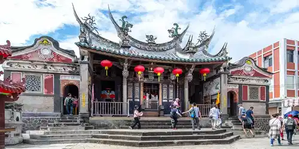
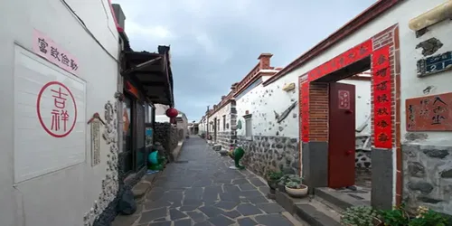
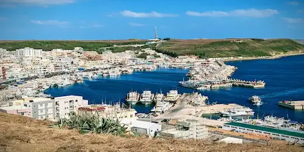
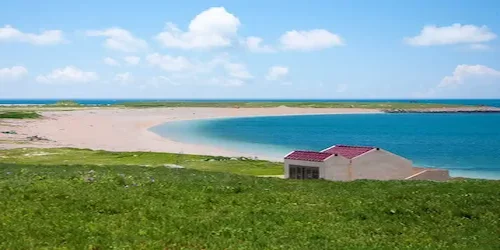
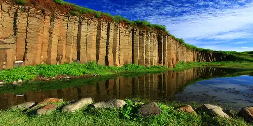
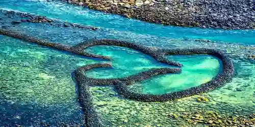
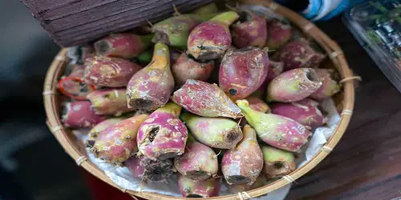
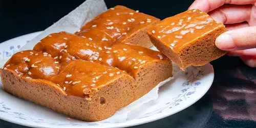

History and Culture

Matsu worship Temple
Penghu's story is shaped by the sea. Once an important stop for fishermen and traders, the islands still showcase their rich past through coral-stone houses, historic temples, and old military forts. The strong connection to ocean life can be seen in traditional stone weirs, lively fishing festivals, and local Matsu worship.

Neighborhood
Today, Penghu blends island charm with cultural energy—from peaceful coastal villages to the famous Penghu International Fireworks Festival. It's the perfect destination for travelers who want history, tradition, and stunning island scenery all in one place.
Best Sightseeing Spots on the Island

Wa'an Fishing Harbor
Jibei Sand Tail (Golden Sand Spit) is formed from fine shell sand and basalt, creating a long golden beach stretching for several kilometers. The water is crystal clear with beautiful blue-green gradients, making it a popular spot for photos and water activities.

Penghu Jibei Islet
Jibei Sand Tail (Golden Sand Spit) is formed from fine shell sand and basalt, creating a long golden beach stretching for several kilometers. The water is crystal clear with beautiful blue-green gradients, making it a popular spot for photos and water activities.

Daguoye Columnar Basalt
The columnar basalt here was formed when coastal lava cooled, creating a stunning scene set against blue skies and crystal-clear seas. Visitors can wander through the area, capture breathtaking photos, and experience the impressive power of nature.

Twin Hearts Stone Weir
The Twin-Heart Stone Weir in Qimei is built from basalt and coral, forming two connected hearts. This traditional fish trap is a popular spot for couples, best viewed at low tide.
Traditional cuisine

Cactus Products
In Penghu, the resilient cactus symbolizes the island's hardy spirit. Its ripe fruit is naturally tangy and fragrant, inspiring unique local dishes like cactus ice, pink chive pockets, layered cakes, and cactus lattes. Discover the must-try cactus specialties of Penghu in one guide.

Brown Sugar Cake
Penghu Brown Sugar Cake is a classic favorite among visitors. Made from pure brown sugar, it has a chewy texture and a sweet but not cloying taste, making it a popular choice for gifts or personal enjoyment.